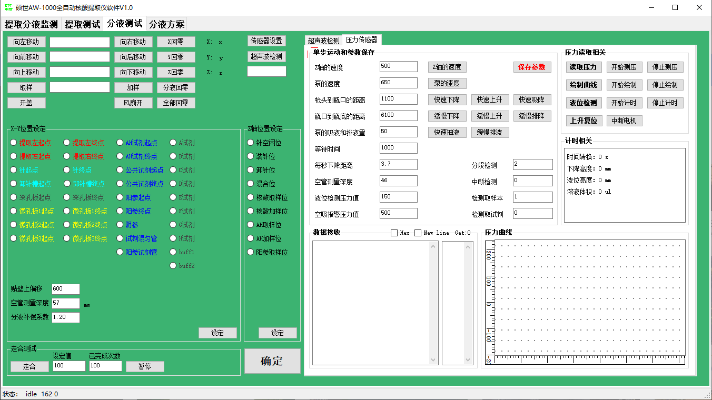

AW-1000压力传感器SOP
供生产、质检、技术支持使用。
一、调试流程
1.打开软件，用管理员账户登录，切换到【分液测试】下的【压力传感器】界面。
2.测试压力传感器，点击【读取压力】按钮，接收的压力值在150左右，则表示压力传感器功能正常。
注意：正常的返回值是以064开头的，如064,8378512，如果不是064开头，则表示压力传感器异常。

3.调整枪头到瓶口的距离，放入装有液体的试剂管，将取好枪头的Z轴移动到瓶口上方，点击【快速下降】按钮，确保枪头刚好移动到瓶口的位置上，然后点击【保存参数】按钮。

3.调整瓶口到瓶底的距离，点击【缓慢下降】按钮，确保枪头在略微接触到瓶底的位置上，然后点击【保存参数】按钮。

4.进行液位检测，将Z轴移动到空闲位，点击【液位检测】按钮，程序会自动检测出液位高度，一般控制液位高度的误差在1~2mm以内。如果误差较大，则需要重复第2步和第3步，重新调整瓶口和瓶底位置。测试完毕，点击【上升复位】按钮，可以将枪头复位。
液位检测的流程
1).泵快速吸取50ul空气，枪头快速移动到瓶口位置；
2).泵缓慢排出50ul空气，枪头缓慢向瓶底方向移动，同时压力传感器开始循环读数，计算移动时间；
3).如果在移动的过程中接触到液面，压力值变化大于设定值（液位检测压力值），计时器就会停止计时，然后根据下降的距离推算出剩余的液量；
4.)如果在移动的过程中没有接触到液面，超时14秒的等待时间，则表示试剂管为空，没有液体。

二、相关参数说明
每台仪器的点位距离不同，重点需要调整的参数是“枪头到瓶口的距离”、“瓶口到瓶底的距离”。
每台仪器的压力传感器读数存在差异，其次需要调整的参数是“液位检测压力值”和“空吸报警压力值”。
其他参数是固定的，不需要改动。
| 参数名 | 参数值 | 备注 |
|---|---|---|
| Z轴的速度 | 500 | 控制Z轴缓慢下降的速度 |
| 泵的速度 | 650 | 控制泵缓慢排液的速度 |
| 枪头到瓶口的距离 | 1700 | 枪头从空闲位移动到试剂瓶口的距离 |
| 瓶口到瓶底的距离 | 5100 | 枪头从试剂瓶口移动到瓶底的距离 |
| 泵的吸液量和排液量 | 50 | 泵进行液位检测时，配合吸取的空气体积 |
| 等待时间 | 1000 | 用来判断检测超时的 |
| 每秒下降的距离 | 3.7mm/s | 枪头从瓶口到瓶底每秒移动的距离，需要根据Z轴速度和瓶口到瓶底的距离进行调整 |
| 空管测量深度 | 46mm | 试剂管的深度 |
| 液位检测压力值 | 150 | 判断枪头从空气到接触到液体的瞬间，压力值变化的临界值，如果超高150，则表示接触到液体 |
| 空吸报警压力值 | 300~500 | 即空气和液体的压力值之差，越小越精准，但误报会高，越大越宽容，但容易漏检。 |
| 分段检测 | 默认值2 | 即分两段检测，先下去一半的距离，如果检测到液位，Z轴就抬升复位，如果没有检测到液位，Z轴再下去一半到瓶底，目的防止液体太满，枪头全部戳下去，会造成液体溢出。 |
| 中断检测 | 0关闭，1开启 | 枪头在下降的过程中，如果检测到液体，Z轴电机就会停止向下运动。 |
| 检测取样本 | 默认值1开启 | 在取样本之前，会读一个空气的压力值，在取样本之后，会再读一个液体的压力值，如果差值大于空吸报警压力值，就会触发重吸检测，如果还是取不到样，就会弹窗报警。 |
| 检测取试剂 | 默认值0关闭 | 取试剂的时候，默认不检测，试剂一般是足量，触底吸液很少会空吸，即使试剂不足，只吸到了少量部分试剂，也不会触发空吸报警，暂时没有开启的必要。 |